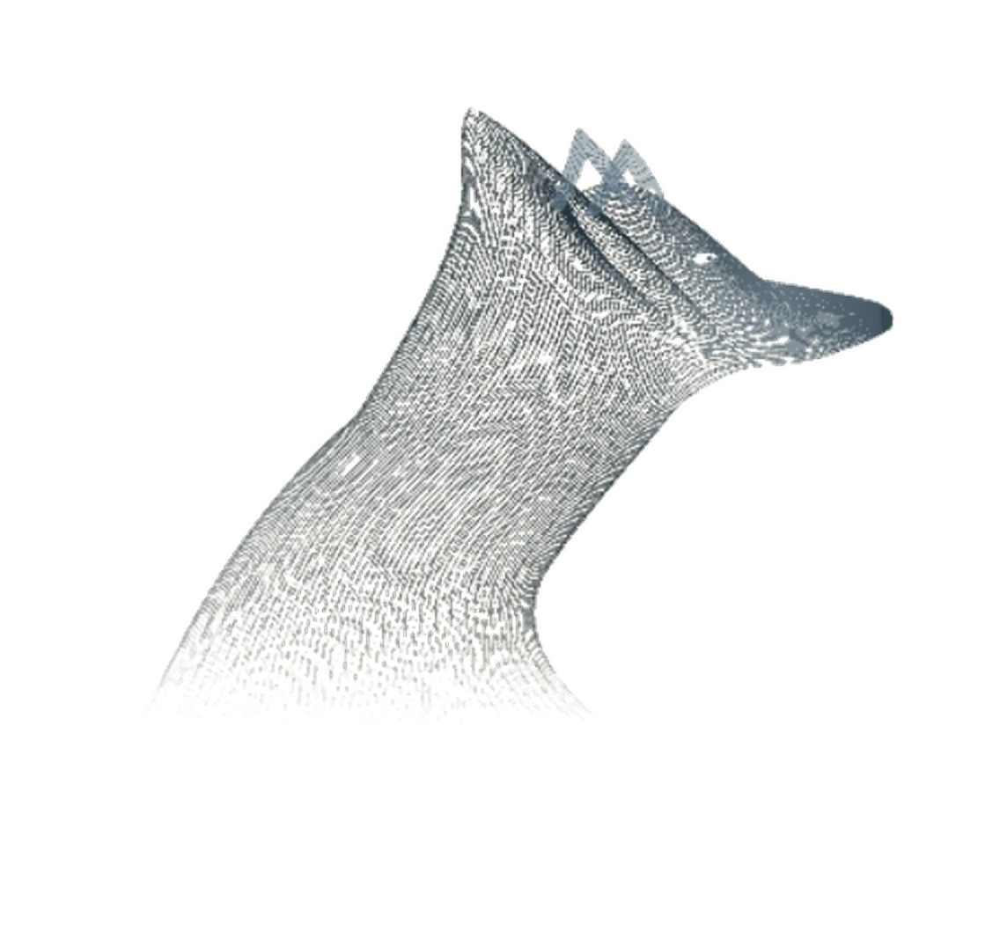

30
public repos

A repo, a spec, or one paragraph is enough — we scope it into a shippable first cut.
I direct an AI agent team and review every diff myself. Docs, tests and CI land with the code.
Deployed, monitored and documented — ready to hand over or keep evolving.